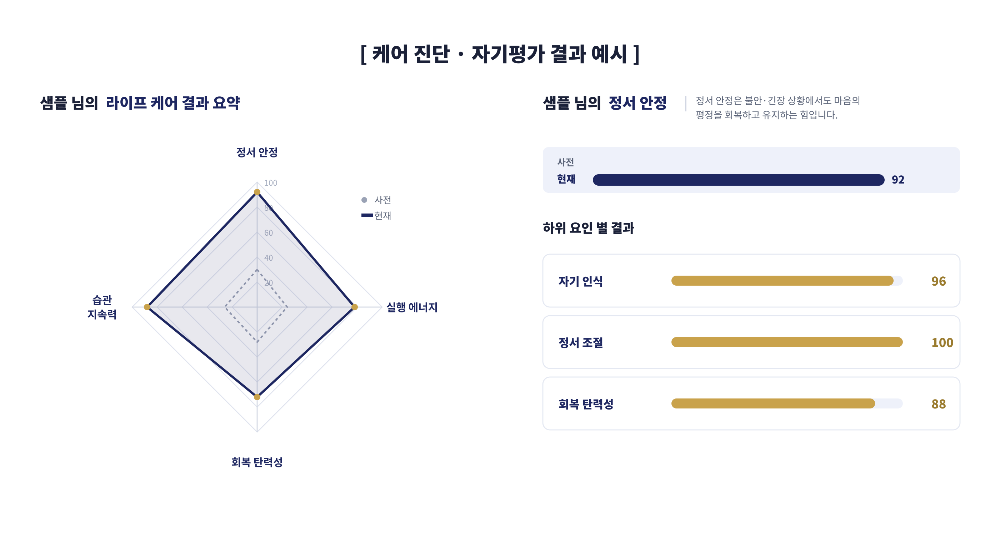
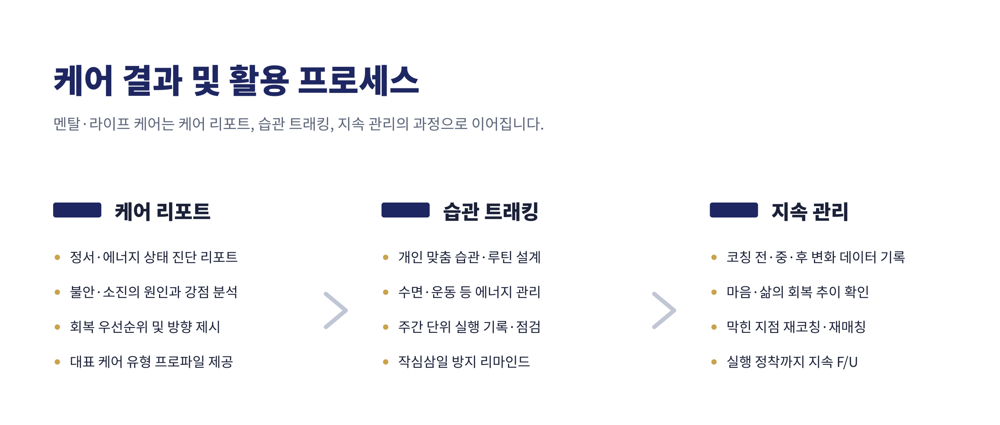

OmniView for You · 멘탈·라이프 코칭
마음(내면)과 실행(육적)을 하나로 다룹니다. 불안 케어부터 습관·루틴 정착까지, 정서 진단과 1:1 상담 위에 실행 시스템을 설계합니다.
프로그램 구성
불안·소진의 원인을 진단으로 확인하고, 전문 상담사와의 1:1 세션으로 마음의 기반을 회복합니다.
수면·운동·에너지를 포함한 개인 맞춤 습관과 루틴을 설계합니다. 의지가 아니라 시스템으로 유지되도록.
주간 단위로 실행을 기록·점검하고, 작심삼일을 막는 리마인드와 코치 피드백으로 정착까지 관리합니다.
케어 진단 결과 예시
정서 안정 · 실행 에너지 · 습관 지속력 · 회복 탄력성 — 사전·사후 비교로 회복과 정착의 추이를 확인합니다.

케어 결과 및 활용
